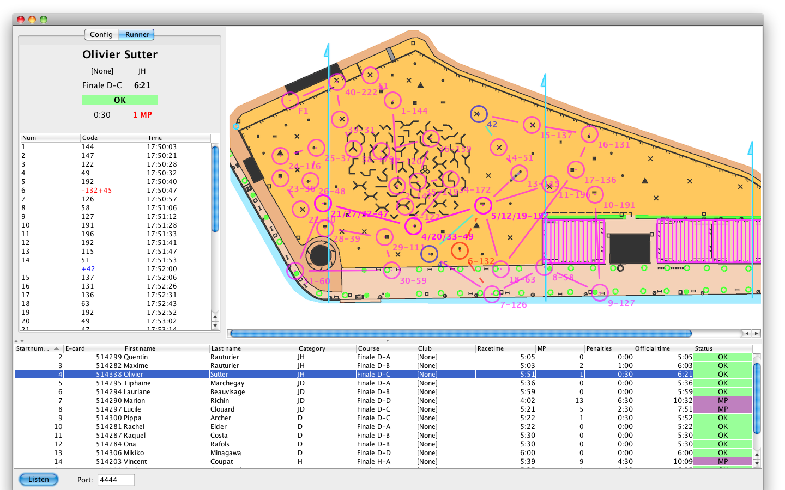

LiveMap and Animation
The toolbar contains two buttons dedicated to live analysis and animation of the race.

The magnifier opens the LiveMap, a dedicated visualization which provides an easy way to understand traces. The antenna opens a dialog to start broadcasting card read to a GecoLive server.
Please note these are still experimental features.
LiveMap for on-the-fly visualization and analysis
LiveMap complements the trace as it offers an intuitive visualization of missing and added punches on the map. Even in complex cases (involving butterfly loops), the two tools together allows one to understand errors in the race.
Once the view is opened, selecting a runner in the Runners Panel will display his trace. OK punches are shown in magenta. Missed punches and legs are shown in red and dashed lines. Added punches not on course are shown in blue and cyan.

Configuration:
- load a map image
- load a course file in XML format
It is recommended to export both files from OCAD. There are known problems with other programs.
See Adjusting the LiveMap to adjust map and controls. You can then check controls or courses with the last buttons.
Don’t forget to save parameters once you are satisfied! Geco will create a live.prop in the stage directory so that parameters gets loaded automatically. You can reuse the file on any computer using LiveMap or GecoLive for this stage.
GecoLive for animation
GecoLive is an application dedicated to animation: it can show the trace of a runner as soon as he downloads his E-card in Geco. The speaker can also browse other runners. GecoLive can reside on a different computer and receive data over the network.

Configuration:
- launch GecoLive from the command line with
java -jar gecoXXX.jar net.geco.live.GecoLive - start the GecoLive server by clicking the Listen button in the bottom left corner (check the port number)
Multiple Geco instances can push data to GecoLive:
- open the live dialog by pushing the antenna button
- give the proper hostname and port number where GecoLive is running
- press ok, broadcasting is starting
You can always interrupt broadcasting by clicking again the button.
Further configuration:
- Geco only pushes card reading events and not other changes affecting results; as a consequence, GecoLive is not a reliable mean to get results: it just displays traces.
- to display results to the speaker, run a web server and use the autoexport feature from the Results Panel.